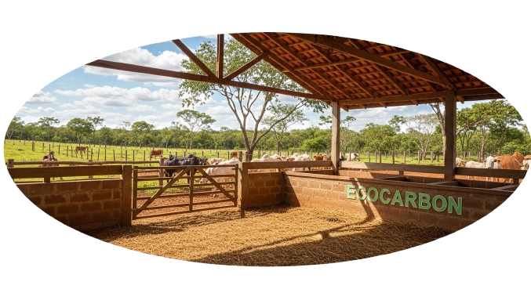
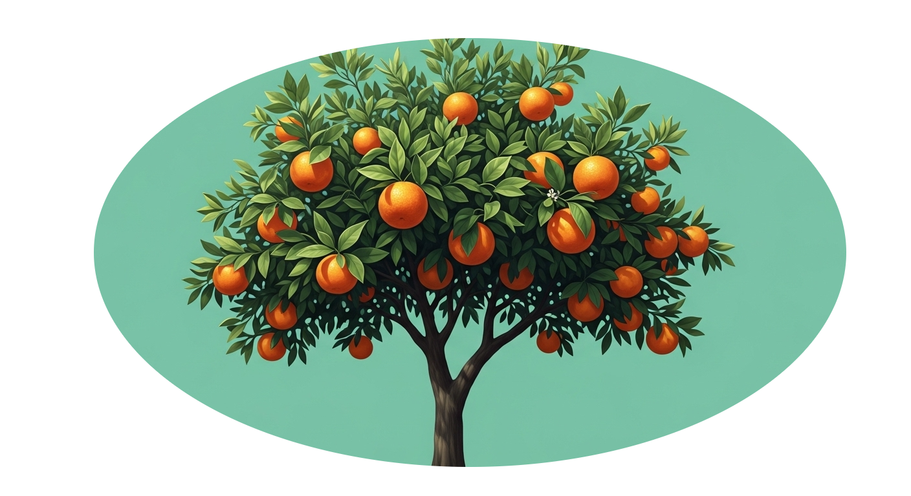
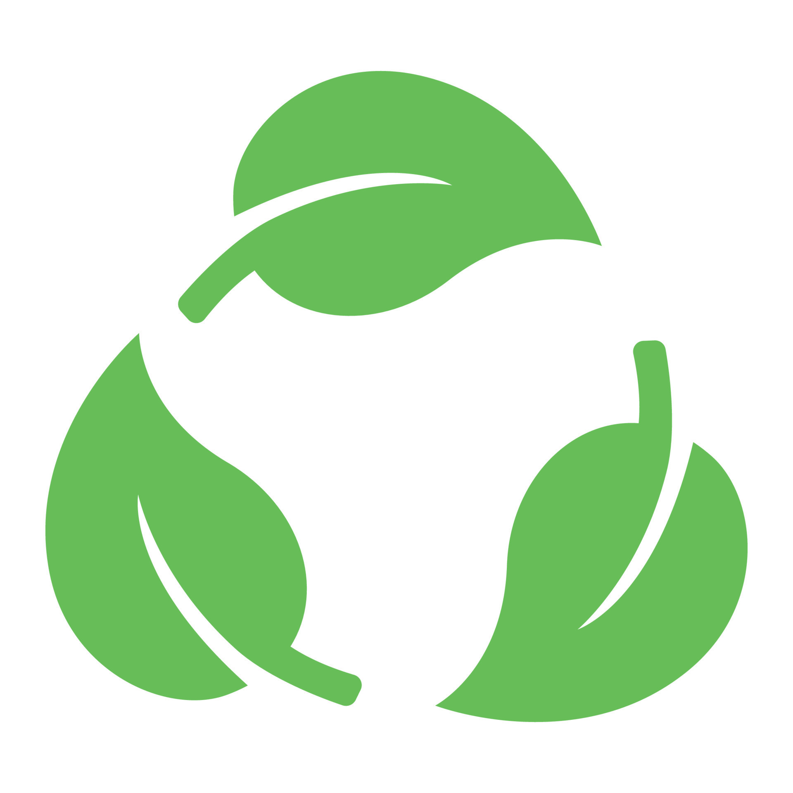
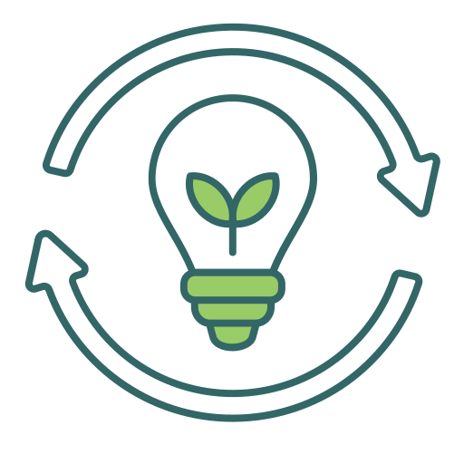
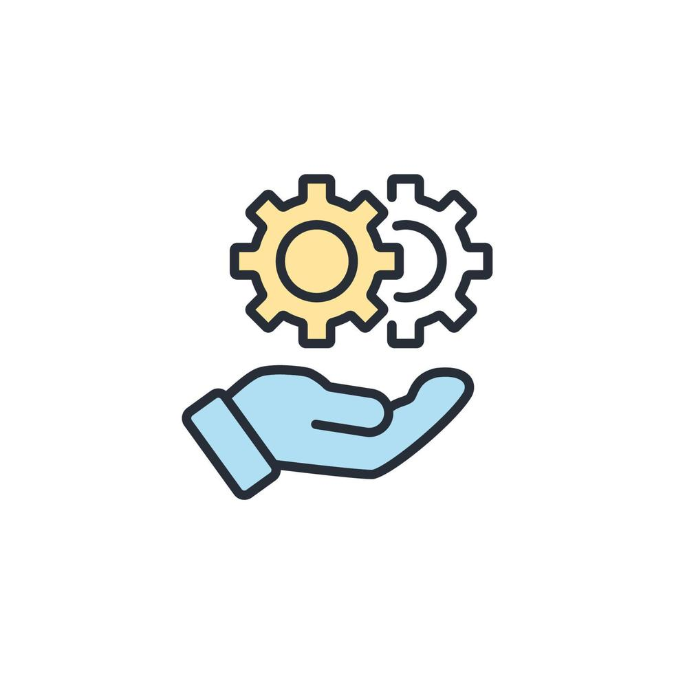

Líder em sustentabilidade e inovação no agronegócio. Nosso compromisso é claro: promover práticas agrícolas sustentáveis, preservar áreas naturais e mitigar os impactos das mudanças climáticas. Junte-se a nós em nossa jornada rumo a um futuro mais verde e próspero.
EcoCarbon · EcoCarbon · EcoCarbon
Sobre nós
A cooperativa EcoCarbon nasceu da visão e liderança de seu idealizador, um pioneiro comprometido com a preservação ambiental e a conscientização sobre os efeitos do desmatamento. Nosso propósito é tornar acessível a participação dos produtores em práticas sustentáveis.
Atuamos como elo entre os produtores e o mercado, promovendo a valorização da conservação ambiental com uma abordagem que combina tecnologia e redes profissionais. Estamos expandindo pelo país, alinhando-nos aos Objetivos de Desenvolvimento Sustentável da ONU.
Acreditamos no poder da cooperação e engajamento comunitário. Através de consultorias, projetos e eventos, colaboramos com organizações que promovem sustentabilidade e combate às mudanças climáticas.
Apesar dos desafios, mantemos viva a esperança em um futuro melhor. Com determinação, seguimos trilhando um caminho de inovação e impacto positivo.

EcoCarbon · EcoCarbon · EcoCarbon
Nossa Missão
Nosso propósito é liderar a mudança em direção a uma matriz energética sustentável, oferecendo soluções inovadoras em energia renovável e neutralização de carbono. Buscamos progresso socioeconômico, preservando o meio ambiente para as futuras gerações.
EcoCarbon · EcoCarbon · EcoCarbon
Benefícios e Impacto Ambiental
Participar da cooperativa reduz despesas com compensações ambientais e oferece alternativas mais acessíveis para neutralização de carbono.
Contribua para a captura de CO₂ por meio de projetos certificados e auditados, promovendo um futuro mais sustentável.
Fortaleça a conservação de ecossistemas, promovendo o reflorestamento, o cuidado com solos e a recuperação de nascentes e rios.

EcoCarbon · EcoCarbon · EcoCarbon
Valores

Sustentabilidade
Compromisso com a preservação dos recursos naturais, mitigação de mudanças climáticas e uso de tecnologias com menor impacto ambiental.

Inovação
Estímulo à criatividade e busca contínua por soluções tecnológicas que aumentem a eficiência no setor de energias renováveis.

Responsabilidade Social
Desenvolvimento das comunidades, inclusão social, geração de empregos e acesso à energia limpa e sustentável.
Integridade
Agir com ética e transparência em todas as relações, cultivando confiança com colaboradores, parceiros e clientes.